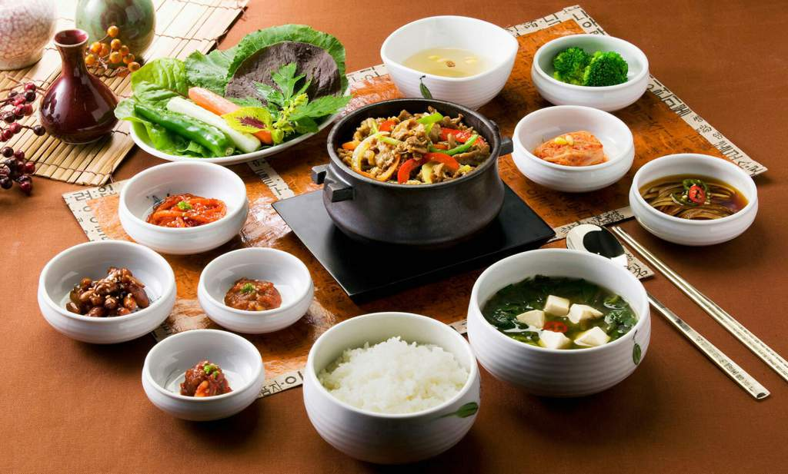

Корейская кухня — национальная кухня этнических корейцев.
Корейская кухня в целом достаточно острая, пользуется пряностями и особенно большим количеством красного перца.
Общая характеристика вкуса
Корейские блюда имеют характерный красно-оранжевый цвет от того, что их щедро приправляют острым перцем. Широкое использование перца объясняется тем, что Корея, особенно южная — страна с тёплым, влажным климатом, а перец просто помогает дольше сохранить продукты, хотя корейская кухня не всегда была такой.
Перцем корейцы начали пользоваться только в XVI столетии, когда его завезли из Южной Америки португальцы. Тогда-то и сформировался традиционный способ приготовления корейских блюд. Перченая еда ценилась очень высоко. Интересно, что сейчас понятия «вкусный» и «острый» стали в корейском языке синонимами. Примечателен тот факт, что набор специй корейской кухни небогат: большей частью это хорошо нам знакомые чеснок и перец, но корейские повара умело орудуют их разными пропорциями и комбинациями, а потому получаются разные вкусы.
Рис в корейской кухне
Как и в кухнях соседних восточных народов, основная еда корейцев — рис.
Фактически для корейцев он настолько же неотъемлемая часть стола, как и хлеб для многих европейских народов. Рис подают каждому в отдельной пиале, а остальные закуски (панчхан) раскладывают в общих тарелках.
К рису подают много овощей, как правило квашеных и очень острых. Наиболее известное овощное блюдо — «кимчхи». Корейцы делают кимчхи практически из любых овощей, присутствующих на местном рынке.
Сервировка стола
Традиционно корейцы едят палочками, но к каждому обеду подаётся и ложка, так как в меню собственно корейской кухни много разнообразных супов.
Излюбленная еда корейцев — пулькоги — кусочки говядины, зажаренные в специальной жаровне, и разложенные посередине стола. На эту еду приглашают высокопоставленных гостей на званый ужин. К слову, современные корейцы редко приглашают гостей к себе в дом, а если есть повод что-то отпраздновать — идут в ресторан.
Интересный факт! Сама ложка для корейцев является символом жизни. И если в семье четверо детей, по-русски говорят «четверо ртов», а корейцы скажут — четверо ложек. Про покойного в Корее говорят «он положил свою ложку».
Напитки
- Макголи (рисовое вино)
- Соджу (корейская водка)
Рецепт Тофу Карри
Тофу Карри (Тубу каре) – это блюдо современной домашней корейской кухни. Соус карри пришел в корейскую кухню из Японии и в Корее почти не претерпел никаких изменений. Японский соус карри отличается мягкостью вкуса, легкой сладостью с нотками овощей и фруктов. Пряность весьма умеренна, по сравнению с индийским.
- Ингредиенты (4 порции):
- Oстрый соус карри- 100 г (1 упаковка),
- твердый тофу – 250 г,
- репчатый лук – ½ шт.,
- свиной фарш - 200 г,
- острая паста Тобадзян - 2,5 ст.л.,
- вода - 600 мл,
- оливковое масло - 1 ст.л.,
- зеленый сладкий перец - ½ шт.,
- красный сладкий перец - ½ шт.
- Для сервировки:
- отварной белый рис.
Подготовить ингредиенты для термообработки.
Репчатый лук очистить от шелухи, луковицу разрезать пополам и одну половинку нарезать мелкими кубиками.
От стручков красного и зеленого сладкого перца отрезать по половинке. Удалить из отрезанных частей стручков перегородки,семена и плодоножку, а сам перец нарезать небольшими кубиками.
Тофу нарезать кубиками примерно 2*2 см.
В сковороду налить оливковое масло и на среднем огне разогреть его.
Затем добавить в сковороду мясной фарш, репчатый лук и сладкий перец. Перемешать содержимое сковороды и продолжать готовить, помешивая, до изменения цвета фарша.
Когда фарш побелеет – добавить в сковороду острую пасту Тобадзян, перемешать содержимое сковороды и продолжать готовить еще 2-3 минуты.
Затем добавить в сковороду воду и довести ее до закипания. Когда вода закипит – добавить в сковороду карри и еще раз перемешать содержимое сковороды. Готовить до загустения жидкости.
Затем добавить в сковороду кубики тофу, снова перемешать содержимое сковороды и готовить еще 2 минуты. Готово.
В данной статье перечислена лишь малая часть существующих блюд в Республике Корея.
Корейская едаВернуться к началу